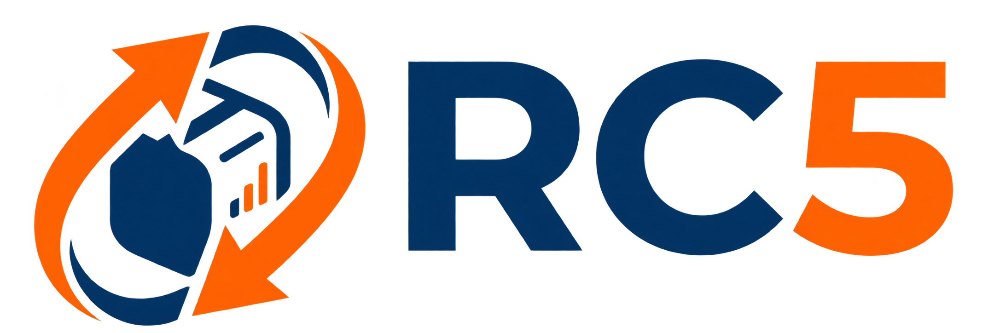
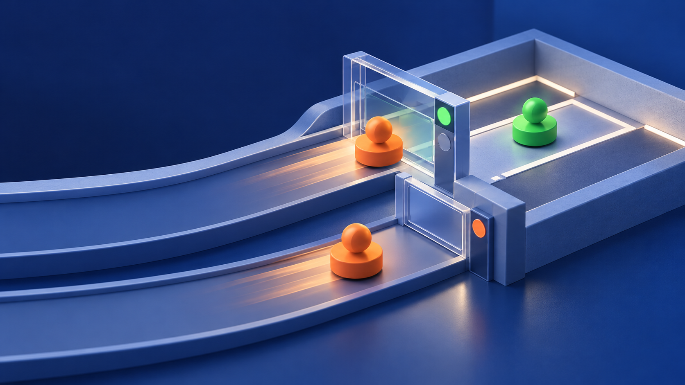
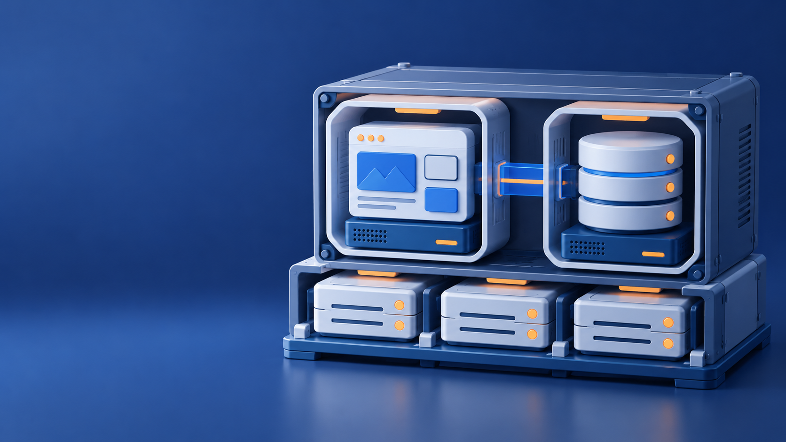

Somos RC5.

CabreraCoordinación y backend
RobainaPruebas y documentación
RomeroBase de datos
RomeroFrontend
CorralesFrontend
Dos perspectivas, una misma brecha.
La Dirección de Tránsito necesita comunicar información vigente. Una persona joven necesita encontrarla cuando decide prepararse.
Un punto de encuentro para ambos.
encuentra
Vial
Tránsito llega
Auditoría de contenidos.
El contenido editado vuelve a borrador.
La aprobación queda separada de la publicación.
Historial: usuario, operación, elemento y fecha.
Demo en vivo.
Requisitos y backlog.
La entrevista se convirtió en trabajo trazable para el equipo.
Ejemplo: RF3 y RNF8 se vinculan con la épica de reservas y las historias US10 y US13.
Sprints, reuniones y cambios.
Cinco incrementos permitieron revisar el producto y ajustar el alcance.
Cambios acordados: consultas ciudadanas, aprobación previa de contenidos e imágenes en el simulador.
Tecnologías y versiones.
Administración remota y ciclo de soporte largo.
Misma rama entre desarrollo y contenedor.
InnoDB, relaciones y transacciones.
Decisiones de implementación.
Portal y panel consumen la misma API.
Rutas, validaciones y reglas explícitas.
SQL preparado y visible en repositorios.
Un monolito modular para ocho módulos con datos y transacciones compartidos.
Flujo API.
POST /api/reservas
Envía la franja elegida.
La reserva queda creada.
Dos solicitudes. Un último cupo.
La transacción bloquea la franja, comprueba reglas y confirma una sola reserva.
una solicitud rechazada

Archivos y hardening.
El código interno queda fuera de la raíz web.
Tipo y tamaño validados; nombres aleatorios.
Usuarios de servicio y raíz de solo lectura.
Servicios y volúmenes.
Portal, panel y API desde el mismo origen.
Puerto 3306 solo en la red interna.
Persistencia no equivale a backup.
Despliegue y capacidad inicial.
vCPU · GB RAM · GB SSD/NVMe

Backup y restauración.
Código y configuración compatible incluidos.
Versión y hashes para verificar la copia.
Otro proyecto Compose y otro puerto.
Pruebas de seguridad.
comprobaciones aprobadas
en esa ejecución
en esa ejecución
Pruebas y límites de la evidencia.
comprobaciones registradas
endpoints cubiertos
sesiones objetivo, aún sin prueba de carga
Resultados del 21 de octubre: los cambios posteriores necesitan revalidación.